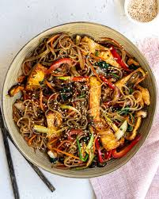

Japchae (잡채) is a classic Korean stir-fried noodle dish made with chewy glass noodles (dangmyeon) tossed with a colorful mix of vegetables, mushrooms, and often beef. The ingredients are seasoned with soy sauce, sesame oil, and a touch of sugar, creating a savory-sweet flavor. Known for its glossy appearance and satisfying texture, japchae is commonly served during celebrations, gatherings, and special occasions in Korea.